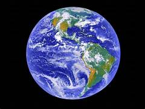

Hello World !
Few Facts About The World We Live in.

Earth is the third planet from the Sun and the only known celestial body to support life. It has a rich
diversity of ecosystems, climates, and species. Covered mostly by water, Earth has a dynamic atmosphere that
sustains life through the water cycle and weather patterns. Its landmasses include continents and islands,
while oceans regulate temperature and climate. Earth orbits the Sun once every 365.25 days and rotates every
24 hours, giving us day and night. With its protective magnetic field and ozone layer, Earth shields life
from harmful solar radiation. It is our shared home, and preserving it is essential.